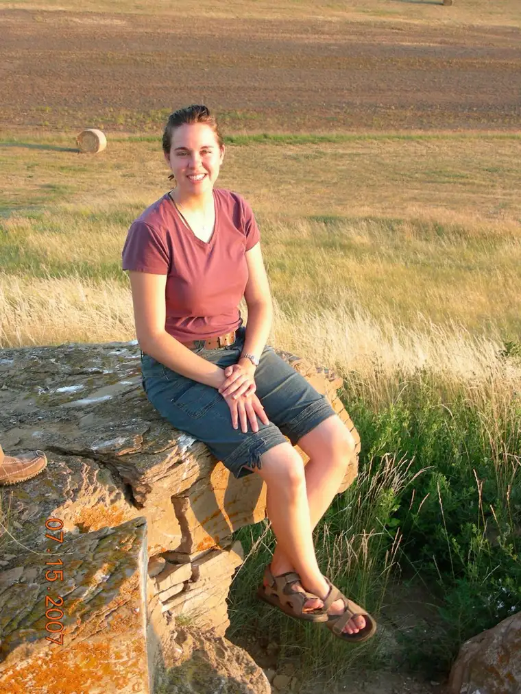

Contributed / Duppong family
HAYMARSH, N.D. – The news that their daughter Michelle was being considered for canonization in the Catholic Church came at the end of an ordinary, yet very busy, spring day on the Duppong family farm.
Michelle’s father, Ken, her sister Renae, and a few hired helpers had been taking the cows out to pasture, pushing them through the pens. “Renae was exhausted and covered with grime,” said her mother, Mary Ann, and had come in to shower around 9 p.m.

Shortly afterwards on that June 15 evening, the phone rang, and Mary Ann heard a very excited Monsignor James Shea, president of the University of Mary, on the other end. She was unprepared for what happened next.
“Congratulations on the news about Michelle! It’s so exciting!” Shea said. “What news?” she asked.
Quickly realizing Mary Ann didn’t know, Shea shared that at a Mass earlier that evening, Bishop David Kagan had formally announced he would be bringing forth the cause for canonization of their daughter Michelle.
Not only that, but he and about 100 vehicles holding other enthusiastic pilgrims were about to depart for Haymarsh that very night to visit Michelle’s grave and “thank God for this great gift.”

By 10:30 p.m., the area near their home, where Michelle is buried, was teeming with people. “Only one person was there ahead of us, walking along the cemetery fence,” Mary Ann recalled. It was the Reverend Tom Grafsgaard, postulator for Michelle’s cause of canonization, who would initiate the investigation into her life to prove sanctity.
A new ‘Servant of God’
Just months later, on Nov. 1, at a morning All Saints Day Mass at the Cathedral of the Holy Spirit in Bismarck, Bishop David Kagan made the formal announcement, with around 500 people present, that the process of beatification and canonization had begun, naming Michelle “Servant of God,” a title indicating the first step toward possible canonization.
That day, one of North Dakota’s own joined such saints as Mother Teresa of Calcutta, Joan of Arc and Jesus’ own apostles as being singled out for their lives of heroic virtue.
A former student of North Dakota State University, Michelle died on Christmas Day 2015, at 31, after an arduous battle with colon cancer.
Kagan said our faith and hope bring us confidence that Michelle, though no longer here physically, is still alive, and with God. “And it is now for us to do our best so that the entire Church universal in time will come to know and love her as we do.”
The bishop said the canonization process is “long and very detailed,” because the Church is careful in investigating the life, virtues, sufferings and death of any person, with the ultimate purpose of holding up that person as a model of holiness for all to emulate.
“Holiness is what God asks each of us, each and every day,” he said, noting that we rejoice in the example and power of all the saints, “and today, most especially, we rejoice and thank almighty God for the gift he gave (of Michelle), not just to her family but to all of us.”
‘We didn’t want to let her go’
The Reverend James Cheney, chaplain for the NDSU Newman Center, represented the Fargo Diocese at the Mass as co-celebrant with Bismarck priests.

In many ways, he said later, Michelle’s virtues were enhanced by a solidly faithful family, recalling how effortlessly she drew people into the life of faith on campus at NDSU, and later, through her work as a Fellowship of Catholic University Students missionary elsewhere.
When her dire prognosis came, Michelle was working for the Diocese of Bismarck in adult faith formation. “I hopped in a plane and flew her down to Mayo that day,” said Cheney, a pilot. “She was such a trooper and faced her (natural) fears head on.”
Ultimately, no attempt to cure her Stage 4 cancer worked, and Cheney flew her a final time, about a year later, from Chicago, where she was receiving treatments, back to Haymarsh. “She was in a lot of pain, but she just offered the whole thing to God for the conversion of others.”
Cheney noted that Michelle’s sister Renae “put all of her life plans on hold and was by her side through the whole journey” during that time, calling her “just as much of a saint.”
Landing in rural North Dakota that day, he gave Michelle a final blessing. “My heart just went out to her. She was such a special lady,” he said, “And we just didn’t want to let her go. We all—but especially her family—fought for her.”
‘How did this even happen?’
At the Mass, Mary Ann said, she kept fighting back tears. “It was so humbling for us, of course, and Ken and I are thinking, “This is so amazing! How blessed we are to be here to witness this day in memory of our daughter, but also for the Universal Church!”

She had flashbacks of Michelle’s life, she said, including the many obstacles she overcame, always “with such grace,” never doubting her mission in serving God.
“We have struggles like any other family,” Mary Ann affirmed, but Michelle was a blessing to raise. “She would just go with the flow, and was very disciplined, and very joyful,” never carrying grudges or bragging.
Mary Ann said the family didn’t realize the vastness of Michelle’s impact, however, until after her death. Many people have since shared with the family how Michelle changed their life’s trajectory—including several priests influenced by her quiet encouragement.
“Michelle continues to work through so many souls,” she said, adding that, despite the new intrusions in their lives, they want to do whatever they can to help the process. “It gives me another mission to share Michelle’s story, and give others hope in their own trials.”
God’s generosity
Michelle was 10 years younger than her cousin Kent Wanner of Fargo, but their families spent a lot of time together growing up at nearby farms.
“I’ve been thinking about how she was just a normal, hardworking North Dakota person,” he said after the Mass, and yet in retrospect, something extraordinary seemed to be happening in Michelle’s soul.

Wanner’s own mother, Jean, was dying of brain cancer during Michelle’s illness, and took her last breath just weeks prior to Michelle’s. “They had a special relationship to the very end; that’s an image I’ll never forget,” he said. “Neither could do anything to help one another, but to show love rather than despair.”
One of Michelle’s best traits, he said, was her approachability. “She was fun, friendly, and definitely serious about her faith,” and this became “the door to deeper relationships with people,” leading them closer to God.
“There are many people I’ve known that have lived holy lives, but for some reason God is being especially generous right now,” Wanner added, not only with Michelle and her family, “but by extension, to the people of this region, pointing out that holiness is for everybody.”
Michelle, he said, modeled how rewarding a life dedicated to God can be, and that no one is exempt. “She was from the sticks—someone nobody would pay attention to normally,” but in her suffering, and her receptivity to him, God brought a “spark” to draw others to faith.
“This is what we should all be aspiring to be,” Wanner said of sanctity. “Just like with Michelle, this is what God can do for normal, everyday people.”
[For the sake of having a repository for my newspaper columns and articles, I reprint them here, with permission, a week after their run date. The preceding ran in The Forum newspaper on Nov. 11, 2022.]